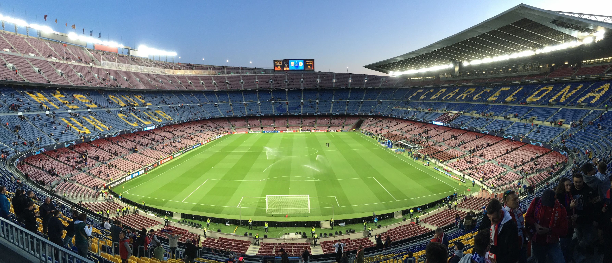

Barcelona listopad 2019

DEN 1
Cesta do Barcelony začala pro mě dost krušným vstáváním v čase 1:55. Budík mě - nutno dodat s Klářinou pomocí - vzbudil, a já si tak mohl dobalit poslední věci a ve 2:10 nasednout do taxíku, který mě odvezl ke Grandhotelu na Benešově třídě, kde jsme s Kubou nasedli do žlutého autobusu a ve 2:30 vyrazili směr vídeňské letiště.
{kind=link}
Plán byl takový, že se v autobuse trošku prospíme. Bohužel kolem nás sedělo několik lidí, nebo spíš bezmozků, kteří spát nechtěli a nedopřáli to ani ostatním. Zvláště rád bych vzpomněl mladého pána ve věku kolem 25 let, který měl zářivě modrý dětský batůžek a když se snažil sklopit sedadlo do vodorovné polohy, využíval k tomu opěrku rukou.
{kind=link}
Na letišti ve Vídni jsme si vyzvedli palubní vstupenky a s menšími komplikacemi jsme prošli bezpečnostní kontrolou. Uvádím s menšími komplikacemi, protože až na letišti jsem si uvědomil, že mám v batohu kapesní nožík, který jsem před několika měsíci vyhrál v soutěži organizované serverem pojisteni.cz. Kapesní nůž byl samozřejmě odhalen při skenu příručních zavazadel, takže mě zaměstnanec letiště požádal, abych otevřel batoh a on do něj mohl nahlédnout. Na tváři člověka s asijskými kořeny bylo vidět, že se těší, až mi nůž vezme a připraví mě tak o jednu z mála věcí, kterou jsem kdy v životě vyhrál. Naštěstí pro mě měří čepel mého kapesního nože přesně 6 cm, což je maximální povolená délka nože, který je možno si vzít s sebou na palubu letadla. Asi nemusím zmiňovat, jak byl pán po tomto zjištění zklamaný :-)
Na letišti jsme si poté na nějakou dobu sedli a povídali si. Kuba u toho snědl banán, který měl z domu, a pořád mi nabízel druhý s tím, že ten je pro mě. Nějak jsem ale v pět hodin ráno neměl chuť k jídlu, takže jsem zdvořile odmítl. Přibližně hodinu před odletem jsme zašli na snídani - ano, pro Kubu se jednalo o jeho druhou snídani. Já jsem si koupil bagetku se sýrem, Kuba čokoládový croissant. Zelený čaj jsme dali napůl.
Let po snídani uběhl jako voda. V 6:55 jsme odlétali z Vídně a po 2,5 hodinách jsme přistáli na letišti El Prat v Barceloně, jak bylo v plánu. Na letišti jsme na chvíli sedli do místního baru a osvěžili se miskou ovoce, kterou jsme, jak jinak, dali napůl :-)
Potom jsme nasedli na autobus a nechali se zavést na Plaça de Catalunya, kde začínala naše malá dopolední procházka. Prošli jsme ulicí La Rambla až k památníku Kryštofa Kolumba, odkud jsme potom pokračovali podél moře na pláž Barceloneta. Na jejím konci jsme zahnuli do centra a šli směrem k chrámu Sagrada Família. Než jsme k němu ale došli, nasedli jsme na zastávce Marina na metro a jeli se ubytovat do našeho hotelu.
Po check-inu, který jsme udělali kolem 14:30, jsme se šli konečně naobědvat, konkrétně do podniku s názvem Café de Galiza. Zde jsme si dali tříchodové menu v tomto pořadí:
- arroz negro - jídlo podobné jako paella, arroz negro v překladu znamená černá rýže, jedná se však o klasickou bílou řýži, která je do černa pouze zbarvená rozvařenými sépiemi, či krakaticemi, jídlo se v našem případě podávalo s černekovou pomazánkou bez sýra a bagetkou;
- chuletas de pavo con fritas - Kuba si dal na druhý chod chobotnice, ale já jsem byl pořád nerozhodný; potom mi Kuba řekl, že pokud chci jistotu, mám si dát chuletas de pavo, tak jsem si dal chuletas de pavo - dostal jsem šťavnatý krůtí steak s hranolkama, který byl opravdu moc dobrý;
- pudink flan - sladkou tečku tvořil pudink s karamelovým přelivem a šlehačkou, ke kterému jsme popíjeli ještě kávu.
Po obědě, na kterém jsme strávili minimálně hodinu a půl, jsme se přesunuli zpět do hotelu, osprchovali se a vyrazili pomalu na stadion Camp Nou. Před stadionem bylo celkem dost různého vyžití - mohli jsme si koupit suvenýry v oficiálním obchodě FC Barcelona, mohli jsme si kopnout tři penalty na elektronického Marca-Andrého ter Stegena, který byl pro malé klučíky zkoušející štěstí naprosto nepřekonatelný, nebo jsme si mohli popovídat s jedním z aktivistů o politické situaci. Sice nás nic z toho nelákalo, ale kdyby tam bylo méně lidí, ta možnost by tam byla. Hodinu před začátkem zápasu jsme se tedy rozhodli, že půjdeme na stadion a najdeme naše místa.
Celou dobu nás s Kubou štvalo, že nebudeme sedět vedle sebe. Sice jsme měli sedět ve stejné řadě, ale Kuba měl sedět na sedadle č. 15 a já na sedadle č. 17. Když jsme ale přišli na místa, byli jsme překvapeni, že vedle sebe sedíme. Do teď to nechápu, ale sedadla byla prostě číslovaná pouze lichými čísly. Číslování ale není tak důležité. To podstatné je, že po příchodu na stadion jsme si doslova sedli na zadek. Camp Nou je obrovský, ale přitom moderní stadion, který se mi opravdu moc líbil. Před výkopem jsme si proto udělali ještě několik fotek.
S blížícím se začátkem zápasu se pomalu snižovala i venkovní teplota, takže jsem začal přemýšlet, zda si ještě nezajdu koupit dvoubarevnou šálu s logem obou klubů. Nakonec jsem to ale vydržel a koupil radši pro sebe a pro Kubu pivo, abychom měli v průběhu prvního poločasu něco na pití.
Zápas mezi FC Barcelona a SK Slavií Praha popisovat nebudu. Reportů existuje na internetu dost. Jen bych rád řekl, že jsem si to užil. I když jsme neviděli žádný regulerní gól, atmosféra na stadionu byla úžasná. Na začátku mě naprosto mrazilo, když hráči přicházeli na plochu za zvuku hymny Ligy mistrů, v průběhu zápasu mě zase bavilo sledovat, jak Kuba prožívá každou situaci úplně stejně jako Katalánci sedící vedle nás, a na konec jsem cítil obrovskou vděčnost za to, že jsem Čech a že jsem mohl sledovat historický úspěch českého fotbalu na evropské scéně.
Po zápase, který skončil neobvykle před 21. hodinou, jsme se vrátili zpět na hotel, umyli se a ještě chvíli sledovali šílený zápas mezi Chelsea FC a Ajaxem Amsterodam, který nám na dálku streamoval Adam Zouhar. Tímto bych mu rád poděkoval za jeho služby :-)
DEN 2
Plán na druhý den byl jasný - dostat se domů. Kvůli pozdnímu nákupu letenek se nejednalo o úplně nejpříjemnější variantu cesty z Barcelony do Brna, ale zvládli jsme to. Itinerář druhého dne byl následující:
- 06:15 - budíček,
- 09:25 - odlet z Barcelony,
- 10:15 - přílet do Palma de Mallorca,
- 13:25 - odlet z Palma de Mallorca,
- 15:55 - přílet na letiště do Vídně,
- 18:39 - odjezd vlaku RegioJet z Hbf,
- 20:05 - příjezd vlaku RegioJet do Brna.
Ještě jednou děkuji Kubovi, že se mnou celou cestu absolvoval a založil mě, když jsem potřeboval cash. Vážně jsem si to moc užil a už teď se těším, až zase příště vyrazíme na další cestu za kvalitním evropským fotbalem :-)
FOTKY
Fotky z Barcelony najdete zde.